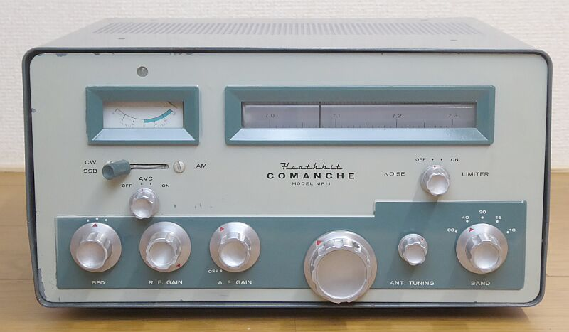
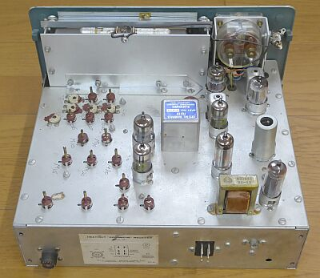
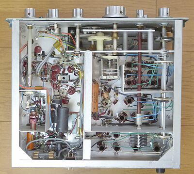

 |
３．５～２８ＭＨｚ帯をカバーするアマチュア無線専用受信機です
サイズは、１５５Ｈ ｘ ３０８Ｗ x ２５０D で、重量は約６．８Ｋｇです
ロゴが旧タイプです、またこのシリーズまでは各製品に愛称がついていました
製品型番より愛称のほうが、はるかに目立ちます |
１９５９年発売の製品 ＭＲ-１／Ｃｏｍａｎｃｈｅです
３．５ＭＨｚ帯～２８ＭＨｚ帯 ＨＦ５バンドをカバーする、８球構成のアマチュア無線専用レシーバです
１９６２年には、ＳＳＢをより意識した ＨＲ-２０ が、極めてよく似た形状というか同じ筐体で発売されました
ＭＲ-１は、ＭＴ-１/Ｃｈｅｙｅｎｎｅ という、ＡＭ／ＣＷ送信機とセットになって販売されていたものです
電源供給は、専用電源から送信機を経由して給電されます
モバイルニーズを想定したもののようで、このような方式がとられています
余談ですが、ＭＴ-１/Ｃｈｅｙｅｎｎｅ という送信機，ＶＦＯのみ・・・クリスタルの利用は、最初から考慮されていません
本機は、中間周波数３ＭＨｚを採用した、高１中２のシングル・コンバージョン・スーパーヘテロダイン方式です
きちんと、３ＫＨｚ（－６ｄｂ） １０ＫＨｚ（－６０ｄｂ）のクリスタルフィルタが採用してあります |
|
 |
左写真上は
ＨＲ-２０（下）とＨＸ-２０（上）ですが、ＭＲ-１もＭＴ-１とセットで同様に上下に重ねてベンチシートの車にセットするイメージです
ＵＳのベンチシート車ならこその設定です
この時代から、ＨＦのモバイル運用をという設定は、いかにも自動車社会の進んだＵＳらしいことでしょう
|
|
|
 |
シャーシ上面
バンド切替ごとに、メインダイヤル表示部が回転して各バンドを横に目いっぱい展開します
ダイヤル構造については、こちらのＨＧ-１０Ｂを参考に、よく似ています
３ＭＨｚクリスタル・フィルタが大きく見えます
電源も内蔵せず、とてもシンプルです
角型６Ｐジョンソンコネクタは、相棒の送信機 ＭＴ-１より電源給電を受けるためのものです
|
 |
シャーシ底面
左サイドにＢＦＯ部がありますが（左端のつまみがＢＦＯツマミ）、ＬＣ（自励発振）方式です
ＶＦＯ（自励発振部）の構造については、やはりこちらのＨＧ-１０Ｂに、よく似ています
|
受信機単独で動かすためには、電源の用意が必要です
ＨＲ／ＨＸ-２０用の電源／ＡＣ電源：ＨＰ-２０がそのまま使えますが、電源コネクタの形状が異なります
本機は、角型６Ｐジョンソンコネクターの採用、ＨＲ／ＨＸ-２０は、ＵＳ８Ｐです
ＵＳ８Ｐコネクタに交換するか、１本ずつ差込形接続端子を使って接続するか・・・高圧６００Ｖは不要ですから、５本の接続の用意で事足ります（きっと、この手で対応すると思います！） |
| ＢＡＮＤ（ＭＨｚ） |
ＡＭ
３０％ １ＫＨｚ 変調ＯＮ／ＯＦＦで
S/N１０ｄｂが得られる信号強度 |
ビート受信（ＣＷ／ＳＳＢ）
ＲＦ信号のＯＮ／ＯＦＦで
S/N１０ｄｂが得られる信号強度 |
| ３．５ |
μV |
μV |
| ７ |
μV |
μV |
| １４ |
μV |
μＶ |
| ２１ |
μＶ |
μＶ |
| ２８ |
μＶ |
μＶ |
|
|
|
電源を外付けにしている点などから、とてもコンパクトにまとめられた受信機だと思います
このくらいのスペースと部品数であれば、しっかりしたＨｅａｔｈ-ｋｉｔのマニュアルで、何ら問題なく組み立てられると思います
この先ですが、ＵＳ８Ｐコネクタと差込形接続端子を使って、ＨＰ-２０から給電できるようにして動作させてみます |